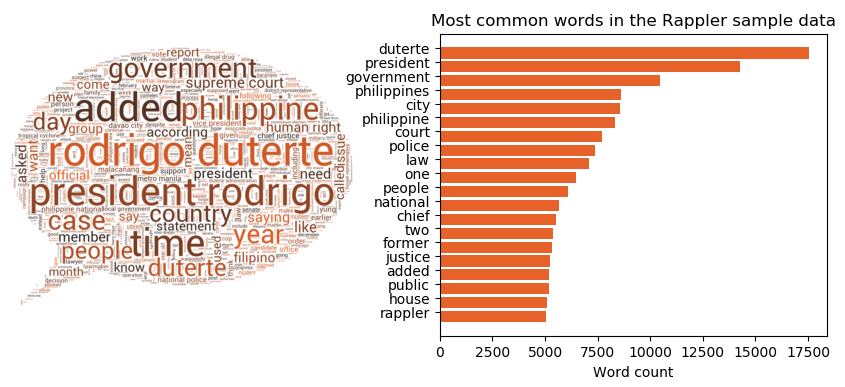

Authors and Notes
This analysis was done together with my groupmates George Esleta, Carmelita Esclanda, and Elmer Robles.
Original creation and submission for this notebook was last July 2019.
Executive Summary
Rappler, one of the leading online news publishers in the Philippines, seeks to inspire community engagement and create action for social change through citizen journalism. However, it has recently been under scrutiny by the Philippine government for “twisted” reporting. This study aims to uncover the underlying themes of Rappler news articles via unsupervised clustering techniques and see if there is an inherent concentration of news in a specific theme. A total of 11,079 articles were extracted from Rappler’s national news section published from January 2018 to May 2019. Features were extracted from the articles using a term frequency-inverse document frequency (TF-IDF) vectorizer and dimensions were reduced by implementing Latent Semantic Analysis (LSA). Lastly, unsupervised clustering via k-means algorithm was applied to group the articles and internal validation metrics were utilized to determine the optimal number of clusters. Ten clusters were uncovered, with Philippine President Rodrigo Duterte as the dominant cluster. The remaining themes touch on different branches of government, police and weather updates, and trending national issues. The insights gained from this research can aid Rappler in balancing its reporting by lessening bias towards specific topics.

Introduction
Rappler is one of the leading online news publishers in the Philippines. It was started in 2011 by former CNN journalist Maria Ressa. However, since 2018, Rappler has been under heavy scrutiny by the Philippine government for “twisted” and “biased reporting”. Philippine President Rodrigo Duterte even went so far as calling Rappler a “fake news” outlet that publishes articles that are “pregnant with falsity.” [1] Rappler has been on the receiving end of criminal cases from the Philippine governments. BIR filed several counts of tax evasion charges against Rappler CEO Maria Ressa. Cyberlibel cases were also filed against Ressa.
This begs the question “Why is Rappler being targeted by the Duterte Administration?” Is Rappler really “twisted” and “biased” in its reporting? To answer this question, we uncovered the underlying themes of Rappler’s news articles via unsupervised clustering, to see if there is indeed an inherent concentration of news in a specific topic or theme.
Business Value
Extracting themes from a set of articles programmatically has a widespread application in the digital publishing industry and can be used to deliver business value to readers, journalists, advertisers, aggregators, and researchers.
Readers in the digital age have no patience. They are more likely to use a search engine to retrieve a set of ranked articles from multiple news sources and it becomes a challenge for online news platforms to engage a reader continuously. Automatic theme extraction and clustering of articles provide the ability to structure a set of articles in order to make it easier for readers to navigate to related articles. If articles can be presented in a logical hierarchy driven by patterns in the data, human intervention is minimized (saving on labor costs) and the reader is kept on the news platform, increasing engagement time on the site.
News Publishers and Journalists seeking to address topics of broad interest to their readership can benefit from a thematic clustering articles to determine the balance of news coverage. Publishing organizations are always looking for gaps in news coverage in order to offer readers some perspective and insight into topics that are not heavily covered. By examining existing themes holistically, they can better gauge what is missing and what their next article should be about.
Advertisers that are considering online news platforms to reach specific customer segments can tailor their messages so that they are congruent with the themes that readers are interested in. For instance, themes dealing with legislative or judicial proceedings may appeal to advertisers whose clients are lawyers or law schools. Advertisers of tourism and tourist agencies may be interested in weather and specific vacation destinations, such as Boracay.
Aggregators in the licensed publishing industry create packages of content for redistribution. Their business model, which can be subscription or advertiser-based, is to target specific customers based on their geographic, demographic, and psychographic profile. For instance, if an investor wanted to understand market conditions for a particular industry, they would subscribe to a real-time news delivery service that was able to provide the relevant articles.
Researchers make money by selling analytical reports. By studying the themes presented on news platforms and combining the study with other metrics such as readership engagement, sentiment analysis, and political stance, they can make in-depth comparisons with other news delivery platforms to better inform advertisers and aggregators.
Methodology
To uncover the underlying themes, a total of 11,079 news articles published from January 2018 to May 2019 were retrieved from Rappler’s Nation section (https://www.rappler.com/nation). The general workflow for clustering the Rappler articles as shown in Figure 1 involves the following steps:
- Data Extraction
- Data Storage
- Data Preprocessing
- Exploratory Data Analysis
- Feature Extraction via TFIDF Vectorization
- Dimensionality Reduction using Latent Semantic Analysis (LSA)
- Unsupervised clustering using k-means algorithm
Each step of the workflow will be discussed in the succeeding sections.
Data Extraction
To collect data for the analysis, web scraping tools were utilized, namely the Python’s requests and BeautifulSoup modules, to extract news articles from the Nation section of Rappler website between the period of January 2018 and May 2019. The extraction process included the extraction of the article’s content and relevant metadata while excluding non-essential information such as image captions, author and photographer details, location headers, hyperlinks, social media text, and general sign-offs. To ensure data accuracy and validity, an initial cleaning process was performed to eliminate irrelevant information.
Data Storage
The extracted articles were stored in a local sqlite database. A total of 11,079 news articles were stored in the database. Table 1 shows the data description:
TABLE 1: Data Dictionary
| Data | Data type | Description |
|---|---|---|
| article_id | VARCHAR | Unique ID identifier |
| url | VARCHAR | Relative URL |
| headline | VARCHAR | Headline title |
| metadesc | VARCHAR | Quick synopsis of the article |
| label | VARCHAR | Absolute URL |
| author | VARCHAR | Author name(s) |
| published_date | VARCHAR | Published date |
| updated_date | VARCHAR | Date updated |
| article | VARCHAR | Article text |
| metakey | VARCHAR | List of metatags associated with the article |
Data Preprocessing
Data preprocessing was implemented on the acquired article text. The text preprocessing involves:
- Neutralizing text case-sensitivity by converting text to lowercase
- Omitting unnecessary whitespaces by removing leading and trailing whitespace
- Converting words to root form by performing stemming, via NLTK’s
PorterStemmer.
Exploratory Data Analysis
Exploratory data analysis was conducted on the article corpus to identify any prominent themes or topics before clustering the data. Figure 2 illustrates the word cloud and word frequency graph for the Rappler news articles published from January 2018 to May 2019. The results demonstrate that the most frequently mentioned word in the dataset is President Rodrigo Duterte, indicating that he is a significant topic in Rappler’s news articles during that period. Furthermore, notable words such as government, Philippines, police, and justice were also identified. To confirm these findings, feature extraction and cluster analysis were performed on the dataset. Consequently, it can be inferred that at least one article cluster should have Duterte as the recurring theme.

Feature Extraction
To vectorize the text, the term frequency-inverse document frequency (TF-IDF) vectorizer was implemented using scikit-learn’s Tfidfvectorizer. Unlike an equal weighting vectorizer, the TF-IDF statistic measures the significance of a word to both the document and the corpus. The implementation of the vectorizer also involved considering additional parameters, such as:
- the removal of English stopwords
- the inclusion of unigram, bigram, and trigram n-grams.
- words that appeared less than 0.1% or more than 70% were discarded from the vectorization
TABLE 2: Hyperparameter adjustments
| Parameter | Description | Value |
|---|---|---|
min_df |
ignore terms that have a document frequency strictly lower than the given threshold | 0.001 |
max_df |
ignore terms that have a document frequency strictly higher than the given threshold | 0.7 |
ngram_range |
The lower and upper boundary of the range of n-values for different n-grams to be extracted. All values of n such that min_n <= n <= max_n will be used | (1,3) |
The TFidfVectorizer performs further cleaning of the data by removing both frequent words and rare words. Stopwords, or words that appear too frequently in the English and Filipino language (e.g., the, a, an, and, or), were dropped from the corpus. Rappler-specific stopwords, or words that appear in more than 70% of the titles, were also ignored by setting the max_df parameter of TFidfVectorizer to max_df = 0.7.
Rare words, or words that appeared in less than 0.1% of the Rappler articles, were also excluded from the corpus. This was implemented by setting the min_df parameter of the TFidfVectorizer to min_df = 0.001.
Unigrams, bigrams, and trigrams were extracted as part of the vocabulary by setting the ngram_range parameter of the TFidfVectorizer to ngram_range = (1,3). This range of n-grams was chosen to preserve the context of certain phrases such as “Rodrigo Duterte”, “Supreme Court” (n=2), and “Philippine National Police” (n=3)
After vectorization, the collection of Rappler articles has 36,254 unique items in its vocabulary.
Dimensionality Reduction
The resulting feature set was a 10,873 by 36,254 matrix, which was computationally expensive to cluster. To reduce computational power, the vectorized data underwent dimensionality reduction through latent semantic analysis (LSA) using the TruncatedSVD class of sklearn.
In general, a lower number of dimensions facilitates wider comparisons of themes in a collection of text, while a higher number of dimensions enables more specific comparisons. A dimensionality of 50 to 1000 is typically suitable depending on the document collection’s size and nature. Sensitivity analysis was conducted to determine the optimal number of components, starting with 50 components and incrementing by 50 until 1000 components. The analysis found that using 300 components (n=300) extracted the broader underlying themes.
Unsupervised Clustering
Unsupervised clustering using the k-means algorithm was utilized to extract the underlying themes present in the Rappler news articles. To determine the optimal number of clusters, sensitivity analysis was performed by testing different cluster counts ranging from k=2 to k=20. Internal validation were examined to select the optimal number of clusters. These validation metrics involved:
- minimizing the Intracluster to Intercluster distance ratio
- maximizing the Calinski-Harabasz score
- maximizing the Silhouette coefficient, and
- minimizing the sum of square distance to centroids coefficient
The next section will discuss the resulting article clusters and the optimal number of cluster counts.
Results
To determine the optimal number of clusters, k-means clustering was implemented for different values of the cluster count k from k=2 to k=20. Shown in Figure 3 is the variation in the values of the different internal validation measures as the cluster count k is increased. The silhouette coefficient is monotonically increasing as the number of clusters is increased, suggesting increasing separation of the clusters. However, to keep the clustering parsimonious, the SSE elbow method was used instead to determine the optimal value of k. Plotted below are the values of the internal validation criteria for values of ùëò between 2 and 20. Using the elbow method, k=10 is a good candidate for the number of clusters.
Cluster Themes at k=10
k-means clustering was performed on the Rappler articles using a cluster count of k=10. To infer the underlying theme of each article cluster, cluster word clouds were created as shown in Figure 5.
Form these word clouds, the underlying theme of each article cluster was identified as follows:
- Legislative
- Foreign Affairs (PH-China Relations)
- General News
- Judiciary
- Weather
- President Rodrigo Duterte
- 2019 Philippine Midterm Elections
- Police
- Boracay Rehabilitation
- Health
Figure 6 displays the distribution of the number of articles across the identified clusters. The General News cluster accounts for over 25% of the articles, and the Duterte cluster is the second-largest with more than 15% of the news articles. This validates the initial findings of the exploratory data analysis, which showed that President Rodrigo Duterte is the most mentioned word in the dataset, and that Duterte is a prominent topic in Rappler’s news articles.
Insights
The application of the unsupervised clustering technique on a corpus of 11, 079 news articles shows consistency of topic clusters across different resolutions that include:
Duterte Article Cluster
The dominant theme of Rappler news articles is Philippine President Rodrigo Duterte, with nearly 16% of news articles in this cluster. Subthemes in this cluster include the war on drugs, human rights, Senator Antonio Trillanes, and Duterte’s ongoing war versus Rappler. This can imply that Rappler is particular with the President’s undertakings and that while this may be reasonable, Rappler has to review its focus given their strife with the President.
Philippine Politics Article Cluster (Legislative and Judiciary)
The other major themes are related to the other branches of the Philippine government, particularly the Legislative branch (House of Representatives, Senate) and the Judicial branch (Supreme Court).
Figure 8 shows that the Judicial cluster contains subthemes such as the impeachment of former Chief Justice Maria Lourdes Sereno and the drug charges filed against Senator Leila de Lima by the DOJ. In the case of Sereno, the impeachment was due to various issues including failure to disclose assets in her SALN and misuse of public funds. On the other hand, De Lima was charged with drug-related offenses.
he Legislative article cluster (Figure 9) includes subthemes such as budget and proposed changes in the constitution to shift to a federal type of government. Similar to the dominant clusters, this cluster revolves around politics. It is evident that Rappler has a strong focus on the political landscape in the Philippines, particularly on current and significant issues.
Police and Weather Clusters
Two recurring themes regardless of the number of clusters selected are police reports and weather reports. In line with the duterte cluster, it is sensible that the cluster about the police can be generated given the “oplan tokhang” implemented by the administration. Meanwhile, the weather cluster is sound considering the country’s geographic circumstances.
Time-Specific Article Clusters
The remaining themes are time-related and reflect major events during the timeframe selected (January 2019 to May 2019), such as the 2019 Philippine Midterm Elections, Boracay Island Rehabilitation (April 2018-October 2018), and the Dengvaxia (dengue vaccine) controversy.
Sensitivity Analysis
While it was concluded that 10 is the optimal number of groupings for the subject dataset, sensitivity analysis has been performed to test the robustness of the results gathered. Shown below are the resulting article clusters for k=6 and k=16. It is noted that as the cluster count is increased, the most affected clusters are bigger ones, especially the Duterte cluster. As such, it can be deduced that said cluster has many subclusters which are differentiated when cluster count is increased. Nevertheless, the core clusters (e.g., General News, Duterte, 2019 Election, Police) created regardless of the number of clusters are constant.

k=6
k=16Summary & Conclusions
Grouping of articles into clusters of related topics by unsupervised clustering method has significant value to communication researchers and media practitioners in studying news output at scale and its repercussions. This study was able to unwrap 10 major themes ranging from General News, Politics, Weather, Health and relevant events. As such, the result can be used as a starting point for a generalized theme extraction project from a national corpus in order to learn the general interest and sentiments of the people.
Recommendations
The following points can be considered in future research related to this work:
Comparative cluster analysis with other Philippine news outfits (Inquirer, ABS-CBN News, GMA News) can be explored to validate Rappler’s focus on particular topics;
Sentiment analysis can explored to look into the subjective information or emotional states of the article. The value of combining clustering with sentiment analysis could be implemented in making better sense of Rappler’s public opinion on trending issues or the current administration; and,
Historical analysis can be explored to compare the rappler data during previous administrations with the current to recognize difference in rappler’s focus per administration. Administration changes can affect the political landscape and prioritization of complex issues. For instance, if an issue from one administration was solved in the next administration.
References
1. Duterte says he banned Rappler due to ‘twisted’ reporting
2. Duterte calls Rappler ’fake news outlet”
3. All the news:Clustering 143,000 articles with KMeans
4. Story Discovery using K-Means Clustering on news articles
5. Clustering text documents using k-means
6. Latent semantic analysis